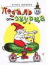

Педаль от огурца

Игорь Шевчук придумал ужасно много всего для детей: тут тебе стихи и проза, игры и головоломки, песни и спектакли, детские передачи и мультфильмы. И после всего этого он еще пытается отказываться: я, мол, не в чистом виде детский писатель, просто, дескать, играл и озорничал. Со словами хулиганил. Смешно! Даже малыши знают, что за озорство надо отвечать. Вот и Игорю Шевчуку не удалось открутиться, записали-таки его в классики детской литературы. И совершенно справедливо! Потому что его стихи - это настоящий праздник и фейерверк, когда все ярко, весело и немножко с ног на голову. Ну а замечательный художник Николай Воронцов щедрой рукой добавил на каждую страницу радости и озорной игры. В результате получилась книжка, серьезная, как... педаль от огурца!